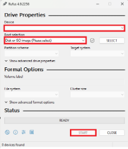
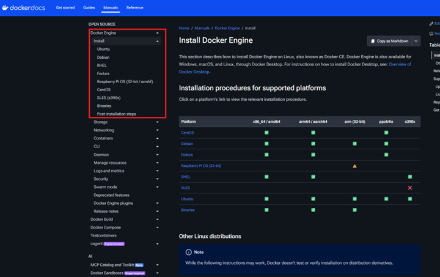
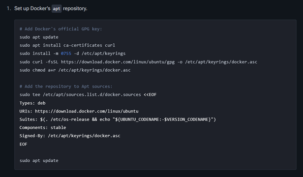
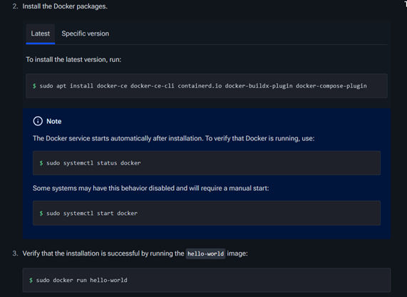
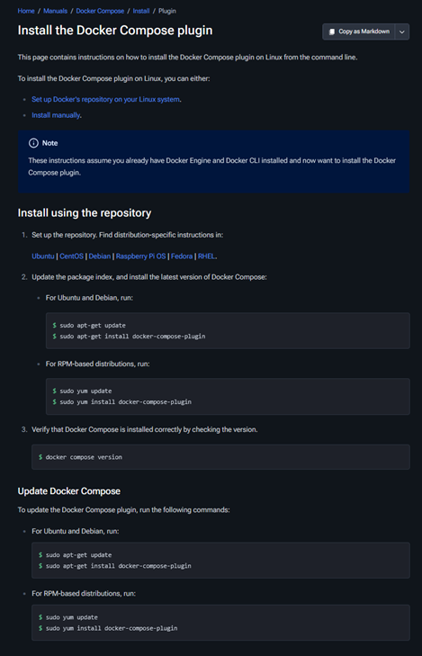
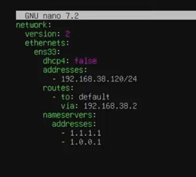
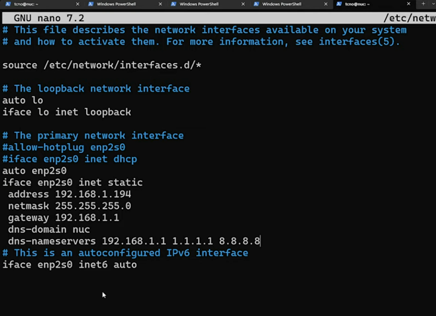

Hypervisors
What it is: A hypervisor is software that runs several virtual machines (VMs) on one physical computer, giving each VM its own share of CPU, memory and storage. Type 1 (bare-metal) hypervisors such as Proxmox, VMware ESXi and Hyper-V run directly on the hardware, which makes them the foundation of most home labs and data centers.
Proxmox
What it is: Proxmox VE (Virtual Environment) is a free, open-source Type 1 hypervisor built on Debian Linux. It runs full virtual machines (KVM) and lightweight Linux containers (LXC) side by side, all managed from a web interface with built-in backups, snapshots and clustering.
Video Tutorial: https://www.youtube.com/watch?v=_u8qTN3cCnQ
Visit https://www.proxmox.com/en/ go to downloads page and download the "Virtual Environment" ISO.
Next you need a boot loader to properly load the ISO onto a flash drive. I prefer Rufus: https://rufus.ie/en/
Select flash drive device and ISO image and start.

Rufus 49.2256 Interface
Once image is finished…
- Plug ethernet into soon to be Hypervisor Machine.
- Attach flasher drive into Hypervisor Machine.
- Boot to bios.
- Change boot option #1 to the flash drive.
- Reboot
- Follow through with installation
- Host name and static IP are of important note
- Once installation finishes. Set machine to the side. You can now log in using the web UI
Log into web server by typing in URL: https://(static IP):8006
Login and select PVE and then Shell.
# I like to install tailscale on the host that way I can remote/connect to into the machine outside of the network.
sudo apt update && sudo apt install -y curl
curl -fsSL https://tailscale.com/install.sh | sh
# This installs the latest version for your OS automatically.
# Start Tailscale service:
sudo tailscale upYou will see an authentication URL: "To authenticate, visit: https://login.tailscale.com/a/xxxxxx"
Copy the URL from SSH output and open it on your local browser.
Log in with your preferred identity provider (Google, GitHub, Microsoft, etc.)
Once authenticated, the machine will appear in your Tailscale admin dashboard.
Check Tailscale status:
tailscale statusOn the left hand side select local(PVE). Here ISO images can be uploaded and container images can be uploaded and downloaded.
Core Services
What it is: Core services are the basic tools installed on almost every Linux server before anything else: secure remote access (Tailscale, SSH and key-based login), a way to run applications (Docker and Docker Compose), and everyday command-line utilities for downloading files, watching performance, editing configuration files and troubleshooting the network.
Tailscale
What it is: Tailscale is a mesh VPN built on WireGuard. It links your computers, servers and phones into one private network (a “tailnet”), so they can reach each other securely from anywhere without opening ports on your router.
Connect to your remote server via SSH:
ssh user@your_server_ipEnsure you have sudo privileges on the target machine.
Install Tailscale
Update package list (Debian/Ubuntu):
sudo apt update && sudo apt install -y curlDownload & install Tailscale:
curl -fsSL https://tailscale.com/install.sh | shThis installs the latest version for your OS automatically.
Authenticate Server
Start Tailscale service:
sudo tailscale upYou will see an authentication URL: "To authenticate, visit: https://login.tailscale.com/a/xxxxxx"
Copy the URL from SSH output and open it on your local browser.
- Log in with your preferred identity provider (Google, GitHub, Microsoft, etc.)
- Once authenticated, the machine will appear in your Tailscale admin dashboard.
SSH
What it is: SSH (Secure Shell) is the standard way to log in to and manage a Linux machine from another computer. Everything you type and see is encrypted, so you can run commands on a server as if you were sitting in front of it.
Install OpenSSH Server:
sudo apt update
sudo apt upgrade
sudo apt install openssh-server -yVerify it is running:
sudo systemctl status sshAllow through the Firewall:
sudo ufw allow sshKey-Based Authentication
What it is: Key-based authentication replaces SSH passwords with a key pair: a private key that never leaves your computer and a public key you copy to the server. It is far harder to crack than a password and lets you log in without typing one.
Windows Video: https://www.youtube.com/watch?v=rf1J8XSEiO0
Windows
On your machine in command line:
ssh-keygen -t ed25519Note file save path location!
If you want login username & password enter it. If not just enter enter enter…
On host machine:
mkdir -p ~/.ssh
nano ~/.ssh/authorized_keysPaste contents of .pub file into nano authorized_keys
Ctrl+o (Then Enter to Save)
Ctrl+x (To Exit)sudo nano /etc/ssh/sshd_configSet password authentication to "no". Delete the # in its front.
Ctrl+o
Ctrl+x
sudo systemctl restart sshMac
Mac Guide: https://www.youtube.com/watch?v=vpk_1gldOAE&list=LL&index=2
On your machine in command line:
ssh-keygen -t ed25519Or
ssh-keygen rsa -b 4096Note file save path location!
If you want login username & password enter it. If not just enter enter enter…
On host machine:
scp ~/.ssh/id_rsa.pub user@ipaddress:/home/user/.ssh/name_key.pub
cat ~/.ssh/name_key.pub >> ~/.ssh/authorized_keys
chmod 700 ~/.ssh/
chmod 600 ~/.ssh/*
nano ~/.ssh/authorized_keysPaste contents of .pub file into nano authorized_keys
Ctrl+o
Ctrl+x
sudo nano /etc/ssh/sshd_configSet password authentication to "no". Delete the # in its front.
Ctrl+o
Ctrl+x
sudo systemctl restart sshDocker
What it is: Docker runs applications in containers: lightweight, isolated packages that bundle an app with everything it needs. A container runs the same way on any machine, so installing, updating or removing a service is one command and never clutters the host system.
Documentation: https://docs.docker.com/engine/install

# Add Docker's official GPG key:
sudo apt update
sudo apt install ca-certificates curl
sudo install -m 0755 -d /etc/apt/keyrings
sudo curl -fsSL https://download.docker.com/linux/ubuntu/gpg -o /etc/apt/keyrings/docker.asc
sudo chmod a+r /etc/apt/keyrings/docker.asc# Add the repository to Apt sources:
sudo tee /etc/apt/sources.list.d/docker.sources <<EOF
Types: deb
URIs: https://download.docker.com/linux/ubuntu
Suites: $(. /etc/os-release && echo "${UBUNTU_CODENAME:-$VERSION_CODENAME}")
Components: stable
Signed-By: /etc/apt/keyrings/docker.asc
EOF
Install the Docker packages:
sudo apt install docker-ce docker-ce-cli containerd.io docker-buildx-plugin docker-compose-plugin
sudo apt update
sudo systemctl status docker
sudo systemctl start docker
sudo docker run hello-world
Docker Compose
What it is: Docker Compose describes one or more containers (their images, ports, volumes and settings) in a single docker-compose.yml file, then starts or stops the whole stack with one command. It is how most of the self-hosted apps on this page are deployed.
Documentation: https://docs.docker.com/compose/install/

CURL
What it is: curl is a command-line tool for sending and receiving data over URLs. It is used to download files and install scripts, test websites and APIs, and check whether a service is responding.
sudo apt install ca-certificates curlHtop
What it is: htop is an interactive, color-coded process viewer for the terminal. It shows live CPU, memory and swap usage alongside every running process, and lets you sort, search and stop processes. It is the quickest way to see what is slowing a server down.
Depending on your Linux distribution, use the corresponding command below:
For Ubuntu, Debian, Linux Mint, or Kali:
sudo apt update
sudo apt install htopFor CentOS, RHEL, or Rocky Linux:
# First, enable the EPEL repository
sudo dnf install epel-release
# Then install htop
sudo dnf install htopFor Fedora:
sudo dnf install htopFor Arch Linux:
sudo pacman -S htopHow to use htop
Once installed, simply type htop in your terminal to launch it.
Quick Cheat Sheet for htop:
Once the interface is open, you can use these keyboard shortcuts to navigate:
- F2 (Setup): Customize the colors, meters, and columns.
- F3 (Search): Find a specific process by name.
- F4 (Filter): Hide everything except processes matching your keyword.
- F5 (Tree): See the parent-child relationship between processes.
- F6 (Sort): Choose to sort by CPU%, Memory%, PID, etc.
- F9 (Kill): Send a signal (like SIGKILL) to stop a process safely.
- F10 (Quit): Exit the program.
Vim/Nano
What it is: Vim and Nano are text editors that run in the terminal, used to edit configuration files directly on a server. Nano is simple, with its shortcuts listed at the bottom of the screen; Vim is more powerful and keyboard-driven, with a steeper learning curve.
Installation Steps
For Ubuntu, Debian, or Raspberry Pi OS:
sudo apt update
sudo apt install nano vimFor CentOS, RHEL, or Rocky Linux:
sudo dnf install nano vim-enhancedFor Arch Linux:
sudo pacman -S nano vimHow to use them
Using Nano:
- To open a file:
nano filename.txt - Save: Press Ctrl + O then Enter.
- Exit: Press Ctrl + X.
- Search: Press Ctrl + W.
Using Vim:
- To open a file:
vim filename.txt - Type Text: Press
ito enter Insert Mode. - Stop Typing: Press
Escto return to Normal Mode. - Save & Exit: In Normal Mode, type
:wqand hit Enter. - Exit without Saving: In Normal Mode, type
:q!and hit Enter.
Net-tools
What it is: Net-tools is a package of classic Linux networking commands such as ifconfig, netstat, route and arp. They show network interfaces and IP addresses, open ports and connections, and the routing table, which makes them handy for troubleshooting connectivity.
Installation Steps
For Ubuntu, Debian, Linux Mint, or Kali:
sudo apt update
sudo apt install net-toolsFor CentOS, RHEL, Fedora, or Rocky Linux:
sudo dnf install net-toolsFor Arch Linux:
sudo pacman -S net-toolsWhat's inside net-tools
| Command | What it does | Modern Replacement (iproute2) |
|---|---|---|
ifconfig |
View/Configure network interfaces | ip addr |
netstat -tuln |
See active ports and connections | ss -tuln |
route -n |
View the routing table | ip route |
arp -a |
View the ARP table (IP-to-MAC mapping) | ip neigh |
Quick Examples
Check your IP address: shows each network interface with its hardware (MAC) address, local IP address (inet) and packet statistics.
ifconfigCheck listening ports: shows which programs are listening on which ports (for example, port 80 for HTTP).
sudo netstat -plntCheck your default gateway: shows the routing table; the line with destination 0.0.0.0 is your default gateway (usually your router).
route -nSamba
What it is: Samba lets a Linux machine share folders with Windows, macOS and other Linux computers using SMB, the same file-sharing protocol Windows uses. Shared folders show up in File Explorer like any other network drive, which makes Samba the usual way to turn a Linux server into a home file server or NAS.
Step 1: Install Samba
For Ubuntu/Debian:
sudo apt update
sudo apt install sambaStep 2: Create the Shared Directory
sudo mkdir -p /samba/public
sudo chmod -R 0777 /samba/public
sudo chown -R nobody:nogroup /samba/publicStep 3: Configure the Samba Share
sudo cp /etc/samba/smb.conf /etc/samba/smb.conf.bak
sudo nano /etc/samba/smb.confAdd your share details at the bottom:
[PublicShare]
comment = Samba on Ubuntu
path = /samba/public
browsable = yes
read only = no
guest ok = yes
force user = nobodyStep 4: Setup User Accounts (Optional but Recommended)
If you want a private share instead of a guest one, you must create a Samba password for your user.
sudo smbpasswd -a your_username
sudo smbpasswd -e your_usernameStep 5: Restart Samba
sudo systemctl restart smbd nmbd
sudo ufw allow sambaStep 6: How to Access the Share
From Windows:
- Open File Explorer
- In the address bar, type:
\\<YOUR_STATIC_IP>\PublicShare(e.g.,\\192.168.38.120\PublicShare) - Press Enter
From Linux:
- Open your file manager (Nautilus, Thunar, etc.)
- Select "Other Locations" or "Connect to Server"
- Enter:
smb://192.168.38.120/PublicShare
Summary of smb.conf Parameters
| Parameter | Meaning |
|---|---|
| path | The actual directory on your Linux disk |
| browsable | Whether the share shows up when browsing the network |
| read only | Set to no if you want to be able to upload/delete files |
| guest ok | Set to yes to allow access without a username/password |
Static IP
What it is: A static IP address is one you set manually so it never changes, unlike a dynamic address that your router hands out through DHCP and may change after a reboot. Servers need a static IP so that port forwarding, DNS records, bookmarks and other devices can always find them at the same address.
Linux (Ubuntu Netplan)
What it is: On Ubuntu Server, network settings live in Netplan YAML files under /etc/netplan/. You set the static address, gateway and DNS servers in that file, then apply it with netplan apply.
- Find your interface name:
bash
ip -c aOr in some cases:
baship addrLook for names like
eth0orenp0s3 - Note the IP route addresses:
bash
ip route - Locate and edit the config file:
bash
cd /etc/netplan ls sudo nano 50-cloud-init.yaml - Insert the configuration:
"addresses:" will be the static IP. "via" will be the IP route

- Apply changes:
bash
sudo netplan apply ip -c aVerify the change with the last command.
METHOD 2: DEBIAN INTERFACES
- Find interface and route:
bash
ip -c a ip r - Locate the config file:
bash
sudo nano /etc/network/interfaces - Apply configuration:

- Restart service and verify:
bash
sudo systemctl restart networking.service ip -c a
Windows
What it is: On Windows, a static IP is set in the network adapter’s IPv4 properties: instead of obtaining an address automatically, you enter the IP address, subnet mask, default gateway and DNS servers yourself.
- Go to Control Panel.
- Select Network and Internet.
- Go to Network and Sharing Center.
- Click on your active connection (e.g., Connections: Ethernet).
- Select Properties.
- Click on Internet Protocol Version 4 (TCP/IPv4) and select Properties.
- Here a static IP, Subnet mask, and Default gateway can be manually set.
DNS
What it is: DNS (Domain Name System) is the internet’s phone book: it translates names like ryanpgray.com into the IP addresses computers use to connect. Records at your DNS provider decide where a domain and its subdomains point: A records for IPv4 addresses, CNAME records for aliases, and MX records for email.
Deploy an HTML Site
What it is: Deploying an HTML site means putting your pages on a web server that is always online, so anyone can open them in a browser. This guide uses GitHub Pages, a free service that publishes static sites (HTML, CSS, JavaScript and images) straight from a GitHub repository, then connects a custom domain such as yourname.com using DNS records and turns on free HTTPS.
These steps follow the video tutorial below (SuperSimpleDev). Each step links to the matching point in the video.
Video Tutorial: https://youtu.be/p1QU3kLFPdg
Before You Start
- A website made of HTML and CSS files on your computer. No website yet? Download the video’s sample site: open it on GitHub, click Code → Download ZIP, and unzip it.
- A free GitHub account.
- For Part 2 only: about $10–15 a year for a domain name.
Useful links:
- Namecheap: domain registrar used in the video
- MxToolbox DNS Lookup: shows which IP addresses a domain points to
- GitHub Docs: Managing a custom domain: GitHub’s own IP addresses and instructions for other registrars
Part 1: Put the Website on the Internet (GitHub Pages)
Opening an HTML file on your own computer only works for you. GitHub Pages copies your files to GitHub’s web servers so anyone can reach them.
Step 1: Sign in to GitHub
Go to github.com and sign in, or sign up for a new account and then sign in.
Step 2: Create a public repository
A repository is like a folder on GitHub that holds your website’s files.
- Click your profile icon (top right) → Your repositories → New.
- Repository name: anything that helps you recognize it, for example
super-simple-website. - Select Public. GitHub Pages is only free for public repositories.
- Leave the other options at their defaults and click Create repository.
Step 3: Upload your website’s files
- In the new repository, click uploading an existing file. If you don’t see the link, add
/uploadto the end of the repository’s URL. - On your computer, open your website’s folder, select everything inside it, and drag the files into the upload box.
- Wait for every file to finish uploading, scroll to the bottom and click Commit changes.
Step 4: Turn on GitHub Pages
- In the repository, click Settings (top tab) → Pages (left menu).
- Under Build and deployment, set the branch drop-down to main (it may say master; pick whichever isn’t None). Leave the folder as
/ (root). - Click Save.
- Wait a couple of minutes, then refresh the page. It will say Your site is live at followed by the address.
Your site’s default address always follows this pattern:
https://YOUR-USERNAME.github.io/REPOSITORY-NAME/Step 5: Open your site
Open the address in a new tab. If you see a 404 page, that’s normal at this point: add the name of one of your HTML files to the end of the address, for example …/REPOSITORY-NAME/youtube.html, and your page loads. The next step fixes the 404.
Step 6: Add an index.html so the home page loads
When an address doesn’t name a file, the web server looks for index.html. No index.html means a 404. Make your main page the home page by renaming it:
- In the repository, click your main HTML file (e.g.
youtube.html) and click the pencil (Edit this file). - Change the file name at the top to
index.html. - Click Commit changes, wait a minute or two, and refresh your site’s address. The home page now loads without a file name.
styles/general.css locally, it loads the same file from the repository, and images and other files work the same way. So the workflow is simply: build the site on your computer, upload the files, and GitHub Pages publishes them. Every new commit republishes the site within a few minutes.Part 2: Get a Domain Name
A domain name like yourname.com is easier to share than the github.io address. Domains are bought from a domain registrar, usually about $10–15 a year for a .com. Once a name is registered, no one else can take it.
Step 1: Search for an available name
- Go to Namecheap → Domains and search for a name.
- For a personal or job-search site,
firstnamelastname.comis a good choice. - If it’s taken, try another ending such as
.net, or change the front, e.g. adddev:firstnamelastnamedev.com. - Click Add to cart on the one you want.
Step 2: Check out
- Open the cart → View Cart. The defaults are fine, but make sure domain privacy is on, or your contact details become public and you’ll get spam.
- Click Confirm Order, create a Namecheap account and sign in (you need the account to manage DNS later).
- Review the checkout page and click Pay Now.
- Go to Account → Dashboard. Your new domain is listed there.
How the Browser Finds Your Site
Before linking the domain, it helps to know what’s happening behind the scenes:
- Web server: software that hands out files when a browser asks for them. Ask for
/index.htmland it returns that file; the browser displays HTML as a page. (VS Code’s Live Server is a small web server on your own computer.) - Host: the computer the web server runs on. GitHub hosts the servers for GitHub Pages.
- IP address: like a phone number for every device on the internet. IPv4 looks like
185.199.108.153; IPv6 is longer and exists because IPv4 numbers are running out. - DNS record: the link between a domain name and an address, set at your registrar. Once it points your domain at GitHub, typing your domain makes the browser contact GitHub’s servers. See also DNS.
Part 3: Point the Domain at GitHub Pages (DNS Records)
Step 1: Open your domain’s DNS settings
In Namecheap: Account → sign in → Domain List → Manage next to your domain → Advanced DNS. Scroll to the Host Records table.
Step 2: Understand the four values
- Type: what the record links to. An
Arecord links a name to an IPv4 address; aCNAMErecord links a name to another domain name. - Host: the subdomain, the part before your domain (like
studioinstudio.youtube.com). Use@on Namecheap for the bare domain with no subdomain; some registrars leave it blank. - Value: the IP address or domain the record points to.
- TTL (time to live): how quickly changes spread across the internet. Choose 5 min, or enter
300(seconds) if there’s no drop-down.
Step 3: Find GitHub Pages’ IP addresses
Open MxToolbox DNS Lookup, enter YOUR-USERNAME.github.io and click DNS Lookup. It lists four IPv4 addresses. Or look them up from a terminal:
nslookup YOUR-USERNAME.github.ioAt the time of writing, GitHub Pages uses these four addresses (confirm them with the lookup or GitHub’s docs):
185.199.108.153
185.199.109.153
185.199.110.153
185.199.111.153Step 4: Add four A records
Click Add New Record once for each address:
| Type | Host | Value | TTL |
|---|---|---|---|
| A Record | @ | 185.199.108.153 | 5 min |
| A Record | @ | 185.199.109.153 | 5 min |
| A Record | @ | 185.199.110.153 | 5 min |
| A Record | @ | 185.199.111.153 | 5 min |
Step 5: Add a CNAME record for www
GitHub recommends also setting up www.yourdomain.com. Add one more record:
| Type | Host | Value | TTL |
|---|---|---|---|
| CNAME Record | www | YOUR-USERNAME.github.io | 5 min |
Click the checkmark (Save All Changes) to save.
www, never on the bare domain itself, so the bare domain uses A records.Optional: also add GitHub’s IPv6 addresses as
AAAA records (listed in GitHub’s docs). Not required today, but it future-proofs the setup.Part 4: Connect the Domain in GitHub Pages
- Go back to your repository on GitHub → Settings → Pages.
- Under Custom domain, type your domain (e.g.
yourname.com) and click Save. GitHub runs a DNS check. - Open your domain in a new tab. It now shows your site, though the browser may say Not secure until the next part.
Check whether your records are live from a terminal:
nslookup yourname.com
nslookup www.yourname.comThe first should return the four 185.199.x.153 addresses; the second should show it’s an alias of YOUR-USERNAME.github.io.
Part 5: Turn On HTTPS (Free)
HTTPS encrypts everything sent between the browser and your site, so no one can read it in transit, and removes the “Not secure” warning.
- In Settings → Pages, find Enforce HTTPS.
- If the box is greyed out, GitHub is still issuing your certificate. Wait a few minutes and refresh.
- Once it’s clickable, check Enforce HTTPS.
- Visit
https://yourname.com. A lock icon in the address bar means HTTPS is working.
Troubleshooting
| Problem | Fix |
|---|---|
| 404 on the site’s home address | There’s no index.html in the top level of the repository. Rename your main page to index.html (Part 1, Step 6). |
| Pages load but CSS or images are missing | You probably uploaded the folder instead of its contents, or file names differ in capitalization (GitHub is case-sensitive: Styles/ ≠ styles/). |
| Changes don’t show up | Publishing takes a few minutes after each commit. Wait, then hard-refresh (Ctrl+F5). |
| Custom domain doesn’t load | Check the A and CNAME records with nslookup, confirm the domain is saved under Custom domain, and allow up to 24–48 hours. |
| “Enforce HTTPS” is greyed out | The certificate isn’t ready yet; it’s issued after DNS checks pass. Wait and refresh the Pages settings. |
| “Not secure” in the browser | Enable Enforce HTTPS, then use https:// in the address. |
Windows Server
What it is: Windows Server is Microsoft’s operating system for servers. It runs core business network services such as Active Directory (central user and computer accounts), DNS, DHCP, file sharing and Group Policy, and is the backbone of most corporate Windows networks.
Section 1: Initial Server Setup & Role Installation
Before beginning, ensure your server has a static IP address configured (e.g., 192.168.49.5)
- Open Server Manager: Click Manage > Add Roles and Features
- Select Installation Type: Choose Role-based or feature-based installation and select your server
- Select Server Roles: Check the boxes for:
- Active Directory Domain Services (AD DS)
- DHCP Server
- DNS Server
- Note: Click "Add Features" whenever prompted for management tools.
- Install: Follow the prompts and click Install
- Promote to Domain Controller: Once installed, click the notification flag and select Promote this server to a domain controller
- Deployment: Select Add a new forest and enter your Root domain name (e.g.,
mylab.local) - Configuration: Set a Directory Services Restore Mode (DSRM) password and complete the wizard
- The server will automatically reboot after installation.
Section 2: DNS - Configuring Lookup Zones
Active Directory creates Forward Lookup Zones automatically, but you must manually configure the Reverse Lookup Zone.
Configuring Reverse Lookup Zones:
- Open DNS Manager: Go to Tools > DNS
- Create New Zone: Right-click Reverse Lookup Zones > New Zone
- Select Primary Zone and check "Store the zone in Active Directory"
- Replication Scope: Select "To all DNS servers running on domain controllers in this domain"
- Select IPv4 Reverse Lookup Zone
- Network ID: Enter the first three octets of your network (e.g.,
192.168.49). - Dynamic Updates: Choose Allow only secure dynamic updates
- Add Pointer (PTR) Record:
- Right-click your new zone > New Pointer (PTR)
- Browse to find your Host (A) record in the Forward Lookup Zone to map the IP to the Hostname
- Final DNS Tweak: In your Ethernet adapter settings, change the Preferred DNS server from
127.0.0.1to the server's actual static IP (192.168.49.5)
Section 3: DHCP - Post-Install & Scope Configuration
- Post-Deployment: Click the notification flag in Server Manager and select Complete DHCP configuration
- This creates security groups and authorizes the server in Active Directory
- Open DHCP Manager: Go to Tools > DHCP
- Create New Scope: Right-click IPv4 > New Scope
- Name: Provide a name (e.g.,
Scope1) - IP Range: Enter Start (e.g.,
.20) and End (e.g.,.250) addresses - Lease Duration: Set to desired time (e.g.,
8 hours) - Configure DHCP Options:
- Router (Default Gateway): Add your gateway IP (e.g.,
192.168.49.1) - DNS Server: Ensure your Domain Controller IP is listed
- Router (Default Gateway): Add your gateway IP (e.g.,
- Activate: Select Yes, I want to activate this scope now
Section 4: Joining a Client to the Domain
- Client Network Check: On a Windows 10 PC, ensure the adapter is set to "Obtain IP address automatically"
- Run
ipconfig /allto verify it received an IP from the new DHCP server - Join Domain:
- Go to Settings > System > About > Join a domain
- Enter the domain name (
mylab.local) and provide Domain Administrator credentials - Restart the client computer
- Verify: In Server Manager, go to Active Directory Users and Computers > Computers to see the newly joined client listed
Network Time Protocol (NTP) Server
What it is: NTP (Network Time Protocol) keeps the clocks of every computer on a network in sync. Accurate time matters more than it seems: logins (Kerberos), security certificates, scheduled jobs and log timestamps all break or become misleading when clocks drift apart. A local NTP server syncs with public time sources and serves the correct time to every device.
Central Logging Server
What it is: A central logging server collects the logs from every machine on the network in one place, using tools such as rsyslog, Graylog or the ELK stack. It lets you search all logs at once, spot problems that span several systems, and keep a record even if a server fails or is compromised.
Containerization
What it is: Containerization packages an application with its libraries and settings into an isolated container that runs the same way on any machine. Docker runs containers on a single host; orchestration platforms such as Kubernetes run and manage many containers across several machines, restarting failed ones and scaling them automatically.
Kubernetes Cluster
What it is: Kubernetes (K8s) is the industry-standard platform for running containers at scale. A cluster has a control plane that decides where containers (grouped into pods) run, and worker nodes that run them. Kubernetes keeps the cluster in the state you describe: it restarts crashed containers, spreads the load and rolls out updates without downtime.
Minikube (Single-node)
What it is: Minikube runs a complete single-node Kubernetes cluster on one computer, inside a VM or container. It is built for learning and local testing rather than production.
Kubeadm (Multi-node)
What it is: Kubeadm is the official tool for building a real multi-node Kubernetes cluster from scratch. It sets up the control plane and joins the worker nodes, which gives hands-on experience with how production clusters are put together.
MicroK8s
What it is: MicroK8s is a lightweight Kubernetes distribution from Canonical, installed as a single snap package. It runs well on small servers and Raspberry Pis, can form multi-node clusters, and turns on common add-ons (DNS, dashboard, storage) with one command.
Automation
What it is: Automation means using scripts and tools to perform repetitive IT tasks (installing software, applying settings, updating servers) the same way every time instead of by hand. It saves time, prevents mistakes, and makes an entire setup easy to rebuild.
Configuration management tool
What it is: Configuration management tools such as Ansible, Puppet and Chef describe how servers should be set up (packages, users, files and services) in text files, then apply that configuration to any number of machines. Ansible is the most common starting point because it needs no agent on the servers and works over SSH.
Scripting
What it is: Scripting is writing small programs that run commands automatically, from one-line shortcuts to complete maintenance jobs. Bash is the scripting language of Linux and PowerShell is its Windows counterpart; together they cover most day-to-day system administration.
Security Hardening
What it is: Security hardening reduces a system’s attack surface: closing unused ports, removing unneeded software, enforcing strong authentication and keeping everything patched. It works in layers: a firewall to control traffic, intrusion detection to spot attacks, and regular vulnerability scans to find weaknesses before attackers do.
Firewall configuration
What it is: A firewall controls which network traffic may enter or leave a machine, using rules based on port, protocol and source address. On Ubuntu, UFW (Uncomplicated Firewall) is a simple front end to the firewall built into the Linux kernel.
Intrusion Detection/Prevention System (IDS/IPS)
What it is: An Intrusion Detection System (IDS) watches network traffic or system activity for signs of an attack and raises alerts; an Intrusion Prevention System (IPS) can also block that traffic automatically. Snort and Suricata are widely used open-source options.
Vulnerability scanning
What it is: Vulnerability scanning automatically checks systems for known weaknesses such as missing patches, outdated software, open ports and weak settings. Tools like Nessus and OpenVAS produce a report ranked by severity, so the most serious issues can be fixed first.
Networking
What it is: Networking covers how devices connect and communicate: IP addressing and subnets, routing between networks, switches, VLANs that split one physical network into separate virtual ones, and the firewall and NAT rules at the network edge. A solid network layout is what keeps a home lab both reachable and secure.
Alerting
What it is: Alerting sends a notification (email, text message, Discord and so on) when a monitored value crosses a threshold, such as a server going offline, a disk filling up or CPU staying high. Tools like Uptime Kuma, Prometheus with Alertmanager, and Grafana watch systems around the clock so problems are caught before users notice.
SQL
What it is: SQL (Structured Query Language) is the standard language for working with relational databases such as MySQL, PostgreSQL, Oracle and Microsoft SQL Server. It is used to read data (SELECT), add and change records (INSERT, UPDATE, DELETE) and define the tables that hold them.
NGINX
What it is: NGINX is a web server most often used as a reverse proxy: it receives every request on ports 80/443, handles HTTPS, and forwards each request to the right app based on its domain name (for example vault.tail.example.com → Vaultwarden on port 1776). This guide uses Nginx Proxy Manager (NPM), which runs NGINX in Docker with an easy web interface and free Let’s Encrypt certificates.
These steps follow the first half of the video tutorial in the Vault Warden section, where NPM is the reverse proxy for a private, Tailscale-only Vaultwarden server.
Video Tutorial: https://youtu.be/AwJXizTdth0
Before You Start
- An Ubuntu server you can reach over SSH (see SSH). The video starts from a freshly cloned Ubuntu VM.
- Docker Engine installed from Docker’s official apt repository (see Docker).
- A domain name whose DNS is managed by Cloudflare (other DNS providers work too; the steps are similar).
Confirm Docker and the Compose plugin are installed:
sudo docker --version
sudo docker compose versionInstall Nginx Proxy Manager
Step 1: Create a folder for your Docker apps
Keep every app in its own folder under ~/docker:
mkdir -p ~/docker/npm
cd ~/docker/npmStep 2: Create the Compose file
nano docker-compose.ymlPaste the following. NPM runs in host network mode, so it listens directly on the server’s ports 80, 443 and 81 and can reach other apps at 127.0.0.1:
services:
npm:
image: 'jc21/nginx-proxy-manager:latest'
container_name: npm
restart: unless-stopped
network_mode: host
volumes:
- ./data:/data
- ./letsencrypt:/etc/letsencryptSave with Ctrl + O, Enter, and exit with Ctrl + X.
services: (indented two spaces, like npm:) and open http://SERVER-IP:7880 afterwards. goaccess:
image: xavierh/goaccess-for-nginxproxymanager:latest
container_name: goaccess
restart: unless-stopped
ports:
- '7880:7880'
environment:
- TZ=America/New_York
- SKIP_ARCHIVED_LOGS=False
- LOG_TYPE=NPM
volumes:
- ./data/logs:/opt/logStep 3: Start it
sudo docker compose up -d
sudo docker compose psThe first start pulls the images, then the status shows running.
Step 4: Log in and create your admin account
Open http://localhost:81 on the server, or http://SERVER-IP:81 from another computer on your network.
- Log in with the default Email:
admin@example.comand Password:changeme. - NPM immediately asks you to change the name, email and password. Use your real email and a strong password.
- Newer versions of NPM skip the default login and ask you to create the admin account on the first visit instead.
Get a Wildcard SSL Certificate (Cloudflare DNS Challenge)
Because the apps will only be reachable over Tailscale, Let’s Encrypt cannot reach the server to verify it. Instead, NPM proves you own the domain by creating a DNS record through Cloudflare’s API (a DNS challenge). One wildcard certificate for *.tail.example.com then covers every private app: vault.tail.example.com, and anything you add later.
Step 1: Create a Cloudflare API token
- Log in to dash.cloudflare.com.
- Go to My Profile → API Tokens → Create Token.
- Next to Edit zone DNS, click Use template.
- Under Zone Resources, choose Include → Specific zone → your domain.
- Click Continue to summary, then Create Token.
- Copy the token and keep it somewhere safe for the next step. Cloudflare only shows it once.
Step 2: Request the certificate in NPM
In NPM, go to SSL Certificates → Add SSL Certificate → Let’s Encrypt and fill in:
| Setting | Value |
|---|---|
| Domain Names | *.tail.example.com (type it, then press Enter) |
| Email Address for Let’s Encrypt | your email |
| Use a DNS Challenge | On |
| DNS Provider | Cloudflare |
| Credentials File Content | replace the example token with yours (see below) |
| I Agree to the Let’s Encrypt Terms | On |
The Credentials File Content box should contain exactly one line with your token:
dns_cloudflare_api_token = PASTE-YOUR-CLOUDFLARE-TOKEN-HEREClick Save. After a minute the certificate appears in the list with an expiry date. NPM renews it automatically.
example.com with your own domain everywhere on this page. The tail part is just a label that groups your Tailscale-only apps; you can pick another word, but keep it the same everywhere.Add a Proxy Host
Each app gets its own proxy host. The Vault Warden section shows the exact values for Vaultwarden.
- Go to Hosts → Proxy Hosts → Add Proxy Host.
- Details tab: enter the full domain (e.g.
app.tail.example.com), Schemehttp, Forward Hostname127.0.0.1(NPM is in host mode), and the port the app is published on. - SSL tab: choose the
*.tail.example.comwildcard certificate, and turn on Force SSL, HTTP/2 Support and HSTS Enabled. - Click Save.
Updating and Troubleshooting
Update Nginx Proxy Manager
cd ~/docker/npm
sudo docker compose pull
sudo docker compose up -d
sudo docker image prune -fView the logs
Follow the logs live (press Ctrl + C to stop):
cd ~/docker/npm
sudo docker compose logs -fNPM will not start: “address already in use”
Something else (often Apache or a regular NGINX install) is already using port 80 or 443. Find it and turn it off:
sudo ss -tulpn | grep -E ":80 |:443 "sudo systemctl disable --now apache2
sudo systemctl disable --now nginxThe certificate request fails
- Check the API token was created from the Edit zone DNS template and includes your domain.
- Check the credentials line has no extra spaces or quotes around the token.
- Wait a few minutes and try again; Let’s Encrypt limits repeated failed attempts.
502 Bad Gateway
NPM cannot reach the app. Check the app is running and published on the port you entered:
sudo docker psBash
What it is: Bash is the default command-line shell on most Linux systems. Beyond running commands one at a time, it is a scripting language with variables, loops and conditions, used to automate tasks such as backups, updates and log cleanup.
PowerShell
What it is: PowerShell is Microsoft’s command-line shell and scripting language. Unlike traditional shells, it passes structured objects rather than plain text between commands, which makes it powerful for managing Windows, Active Directory and Microsoft 365. It also runs on Linux and macOS.
Vault Warden
What it is: Vaultwarden is a free, lightweight, open-source server for the Bitwarden password manager. It works with all the official Bitwarden apps, including the mobile app and the Chrome extension. In this setup it gets a custom domain and a real SSL certificate, but it is never exposed to the internet: it is only reachable from devices on your Tailscale network.
Video Tutorial: https://youtu.be/AwJXizTdth0
| Piece | Used for |
|---|---|
| Server | Ubuntu with Docker |
| Reverse proxy | Nginx Proxy Manager (host mode) |
| SSL | Wildcard *.tail.example.com certificate via Cloudflare DNS challenge |
| Private network | Tailscale |
| Vault address | https://vault.tail.example.com (only works on your tailnet) |
Before You Start
- Docker installed (see Docker).
- Nginx Proxy Manager installed and the wildcard certificate issued.
Connect the Server to Tailscale
Tailscale puts your server and your devices on a private, encrypted WireGuard network (your tailnet) so you can reach the vault from anywhere without opening any ports.
- Create a free account at tailscale.com.
- In the admin console, click Add device → Linux server.
- Set the auth key expiry to 1 day (it is only used now), then click Generate install script and copy it.
- Paste the script into the server’s terminal and run it. It looks like the commands below.
curl -fsSL https://tailscale.com/install.sh | sh
sudo tailscale upBack in the Tailscale admin console under Machines, the server now appears with a Tailscale IP address starting with 100.. You can also print it on the server:
tailscale ip -4Copy this IP. The DNS record in the next step points to it.
Point the Domain at Your Tailscale IP
This public DNS record points to a private Tailscale address, so it only leads anywhere for devices that are on your tailnet. Everyone else gets nowhere.
- In Cloudflare, open your domain and go to DNS → Records → Add record.
- Fill in the record using the table below, then click Save.
| Setting | Value |
|---|---|
| Type | A |
| Name | *.tail |
| IPv4 address | your server’s Tailscale IP (100.x.y.z) |
| Proxy status | DNS only (grey cloud, not proxied) |
Deploy Vaultwarden
Step 1: Create a folder
mkdir -p ~/docker/vault
cd ~/docker/vaultStep 2: Create the Compose file
This is the Compose example from the Vaultwarden GitHub page, with two changes: the port is mapped to 1776 (NPM already uses 80), and DOMAIN is set to your vault address.
nano docker-compose.ymlservices:
vaultwarden:
image: vaultwarden/server:latest
container_name: vaultwarden
restart: unless-stopped
environment:
DOMAIN: "https://vault.tail.example.com"
volumes:
- ./vw-data/:/data/
ports:
- 1776:80- 127.0.0.1:1776:80. Vaultwarden is then only reachable through NPM (which forwards to 127.0.0.1), not directly on port 1776 from your local network.Step 3: Start it
sudo docker compose up -d
sudo docker compose psCreate the Proxy Host in NPM
In Nginx Proxy Manager go to Hosts → Proxy Hosts → Add Proxy Host:
| Setting | Value |
|---|---|
| Domain Names | vault.tail.example.com |
| Scheme | http |
| Forward Hostname / IP | 127.0.0.1 (NPM runs in host mode) |
| Forward Port | 1776 |
| Websockets Support | On (recommended: lets devices sync instantly) |
| SSL tab → SSL Certificate | the *.tail.example.com wildcard |
| SSL tab → options | Force SSL, HTTP/2 Support, HSTS Enabled |
Click Save, then browse to https://vault.tail.example.com from the server. You should see the Vaultwarden login page with a padlock.
Create Your Account and Turn On Two-Step Login
Step 1: Create your account
On the login page click Create account, enter your email, name and a strong master password, then log in.
Step 2: Two-step login with an authenticator app
- Go to Settings → Security → Two-step login.
- Next to Authenticator app, click Manage and enter your master password.
- Scan the QR code with an authenticator app (Microsoft Authenticator, Google Authenticator, etc.).
- Type the 6-digit code from the app and click Turn on.
- Click View recovery code, write it down, and keep it somewhere safe. It is the only way back in if you lose your phone.
Step 3: Test it from another computer
- On your PC, disconnect from Tailscale and open
https://vault.tail.example.com. It should not load. This is what anyone outside your tailnet sees. - Connect to Tailscale and reload. The login page appears.
- Log in with your master password and the authenticator code.
Using the Vault
Add a login
- Click New item → Login.
- Enter a Name (e.g. your bank), Username, and click the generate icon to create a strong Password.
- Add the website under URI (e.g.
https://www.chase.com) so the browser extension can autofill it. - Click Save. The site’s logo appears next to the item.
Set password generator rules
Go to Tools → Generator, set the length (e.g. 20) and turn on special characters. New passwords use these settings.
Organize with folders
Click New → Folder (e.g. Finance), then edit an item and choose the folder.
Share passwords with an Organization
- Click New organization and name it (e.g. Family).
- Invite family members; each needs their own account on your Vaultwarden server.
- When creating an item, set Owner to the organization. Everyone in it can see that item (e.g. a shared Netflix login), while your personal items stay private.
Mobile App and Chrome Extension
Both use the official Bitwarden apps. The device must be connected to Tailscale to reach your server.
Mobile app
- Install the Tailscale app on your phone and connect to your tailnet.
- Install Bitwarden from the App Store or Google Play.
- On the login screen, change the server (region) option to Self-hosted.
- Enter
https://vault.tail.example.comas the Server URL and tap Save. - Log in with your email, master password and authenticator code.
Chrome extension
- Install Bitwarden Password Manager from the Chrome Web Store and pin it to the toolbar.
- Choose Self-hosted, enter
https://vault.tail.example.com, and save. - Log in with your email, master password and authenticator code.
- Visit a saved site to autofill your login, or create a login on a new site and let Bitwarden offer to save it.
Enable the Server Admin Page
The admin page at /admin manages the whole server: view and delete users, and reset a user’s two-step login if they lose their phone. It is off until you give it a password.
Step 1: Generate a hashed admin token
With Vaultwarden running, run the hash tool inside the container and type a strong admin password twice:
cd ~/docker/vault
sudo docker exec -it vaultwarden /vaultwarden hashIt prints a line starting with ADMIN_TOKEN=. Copy the whole line.
Step 2: Save it in a .env file
nano .envPaste the line. It looks like this (yours will be longer), including the single quotes:
ADMIN_TOKEN='$argon2id$v=19$m=65540,t=3,p=4$PASTE-YOUR-HASH-HERE'Save, exit, and make the file private:
chmod 600 .envStep 3: Add it to the Compose file
nano docker-compose.ymlAdd the ADMIN_TOKEN line inside the environment: block, so it reads:
environment:
DOMAIN: "https://vault.tail.example.com"
ADMIN_TOKEN: ${ADMIN_TOKEN}Step 4: Restart and log in
sudo docker compose down
sudo docker compose up -dGo to https://vault.tail.example.com/admin and enter the admin password you typed in Step 1 (the plain password, not the hash).
Backups and Updates
Back up the vault
Everything lives in vw-data. Stop the container briefly so the database is consistent, archive the folder, then start it again:
cd ~/docker/vault
sudo docker compose stop
sudo tar -czf ~/vaultwarden-backup-$(date +%F).tar.gz -C ~/docker/vault vw-data .env docker-compose.yml
sudo docker compose start
ls -lh ~/vaultwarden-backup-*.tar.gzRestore from a backup
cd ~/docker/vault
sudo docker compose down
sudo tar -xzf ~/vaultwarden-backup-YYYY-MM-DD.tar.gz -C ~/docker/vault
sudo docker compose up -dUpdate Vaultwarden
cd ~/docker/vault
sudo docker compose pull
sudo docker compose up -d
sudo docker image prune -fTroubleshooting
- The site does not load anywhere: check the device is connected to Tailscale, and that the
*.tailA record points to the server’s current Tailscale IP (tailscale ip -4). - Certificate warning in the browser: the proxy host is not using the wildcard certificate, or the domain is not under
tail.example.com. - 502 Bad Gateway: Vaultwarden is not running or not on port 1776. Run
sudo docker ps. - Admin page says the token is invalid: make sure the whole
ADMIN_TOKEN='...'line is in.envwith its single quotes, then runsudo docker compose downandsudo docker compose up -d. - Devices do not sync instantly: turn on Websockets Support on the proxy host in NPM.
Home assistant
What it is: Home Assistant is a free, open-source smart-home platform that runs on your own hardware. It brings thousands of devices and services (lights, sensors, thermostats, cameras) into one dashboard and runs automations locally, without depending on the cloud.
Plex
What it is: Plex is a media server that organizes your own movies, TV shows, music and photos and streams them to phones, TVs and browsers, at home or remotely. It downloads artwork and details automatically and can convert video on the fly for devices that cannot play the original format.
RAID
What it is: RAID (Redundant Array of Independent Disks) combines several physical drives into one logical drive for more speed, more redundancy, or both. This guide builds a software RAID on Ubuntu Server with mdadm, entirely over SSH. No hardware RAID card is needed.
Choosing a RAID Level
| Level | Min. disks | Usable space | Survives | Best for |
|---|---|---|---|---|
| RAID 0 (stripe) | 2 | 100% of all disks | No disk failures | Scratch space, speed only. Losing one disk loses everything. |
| RAID 1 (mirror) | 2 | Size of one disk | All but one disk | Boot/OS data, small home servers. Simple and safe. |
| RAID 5 (parity) | 3 | Total − 1 disk | 1 disk | Media and file storage with a good balance of space and safety. |
| RAID 6 (double parity) | 4 | Total − 2 disks | 2 disks | Large arrays of big drives, where rebuilds take a long time. |
| RAID 10 (mirror + stripe) | 4 | 50% of all disks | 1 disk per mirror pair | VMs and databases that need speed and redundancy. |
Use disks of the same size. The array treats every member as the size of the smallest one.
Setting Up a RAID Array over SSH
The examples below use the disks /dev/sdb, /dev/sdc, /dev/sdd and /dev/sde, the array name /dev/md0, and the mount point /mnt/raid. Replace the disk names with your own from Step 3.
Step 1: Connect to the server
From your computer, open a terminal (PowerShell on Windows) and connect:
ssh username@server-ipcat /proc/mdstat.Step 2: Update the system and install mdadm
sudo apt update
sudo apt upgrade -y
sudo apt install mdadm -yIf the installer shows a mail configuration screen (Postfix), choose No configuration unless you already run a mail server.
Step 3: Identify the disks
List every disk with its size and whether it is already in use:
lsblk -o NAME,SIZE,FSTYPE,TYPE,MOUNTPOINTSFor more detail, including the model of each disk:
sudo fdisk -lThe new, empty disks usually show no partitions and no mount point. Write down their names (for example sdb, sdc).
/ or /boot, usually sda or nvme0n1.Step 4: Wipe old data from the disks
Remove any old partition tables or filesystem signatures (list every disk you will use):
sudo wipefs -a /dev/sdb /dev/sdcIf a disk was ever part of another RAID array, also clear its old RAID metadata. An error saying “Unrecognised md component device” just means there was nothing to clear.
sudo mdadm --zero-superblock /dev/sdb /dev/sdcStep 5: Create the array
Run only the one command for the RAID level you chose. When asked Continue creating array?, type y and press Enter.
RAID 1 (2 disks):
sudo mdadm --create --verbose /dev/md0 --level=1 --raid-devices=2 /dev/sdb /dev/sdcRAID 5 (3 disks):
sudo mdadm --create --verbose /dev/md0 --level=5 --raid-devices=3 /dev/sdb /dev/sdc /dev/sddRAID 6 (4 disks):
sudo mdadm --create --verbose /dev/md0 --level=6 --raid-devices=4 /dev/sdb /dev/sdc /dev/sdd /dev/sdeRAID 10 (4 disks):
sudo mdadm --create --verbose /dev/md0 --level=10 --raid-devices=4 /dev/sdb /dev/sdc /dev/sdd /dev/sdeRAID 0 (2 disks, no redundancy):
sudo mdadm --create --verbose /dev/md0 --level=0 --raid-devices=2 /dev/sdb /dev/sdcStep 6: Watch the initial sync
RAID 1, 5, 6 and 10 now sync the disks in the background. This can take hours on large drives. Check progress:
cat /proc/mdstatOr refresh it every 5 seconds (press Ctrl + C to stop watching):
watch -n 5 cat /proc/mdstatYou can keep going with the next steps while it syncs. The array is usable right away, just slower until the sync finishes.
Step 7: Create a filesystem
sudo mkfs.ext4 -F /dev/md0Step 8: Mount the array
sudo mkdir -p /mnt/raid
sudo mount /dev/md0 /mnt/raidConfirm it is mounted and shows the expected size:
df -h /mnt/raidStep 9: Make the array survive a reboot
Save the array layout so Ubuntu reassembles it at boot:
sudo mdadm --detail --scan | sudo tee -a /etc/mdadm/mdadm.conf
sudo update-initramfs -utee -a command above only once. Running it twice adds a duplicate ARRAY line. If that happens, open the file with sudo nano /etc/mdadm/mdadm.conf and delete the extra line.Add the array to /etc/fstab by its UUID so it mounts automatically. nofail lets the server still boot if the array has a problem:
echo "UUID=$(sudo blkid -s UUID -o value /dev/md0) /mnt/raid ext4 defaults,nofail 0 2" | sudo tee -a /etc/fstabTest the fstab entry without rebooting. No output from mount -a means it worked:
sudo umount /mnt/raid
sudo mount -a
findmnt /mnt/raidStep 10: Give your user access
The new filesystem is owned by root. Let your own account read and write to it:
sudo chown -R $USER:$USER /mnt/raidStep 11: Reboot and verify
sudo rebootWait a minute, reconnect with SSH, then check the array:
ssh username@server-ipcat /proc/mdstat
sudo mdadm --detail /dev/md0
df -h /mnt/raidIn the mdadm --detail output, look for State : clean (or active) and every disk listed as active sync.
Checking Health and Replacing a Failed Disk
Check array health
cat /proc/mdstat
sudo mdadm --detail /dev/md0In /proc/mdstat, [UU] means every disk is up. An underscore, such as [U_], means a disk has failed or is missing and the array is running degraded.
Check a single disk’s own health report (install the tools first):
sudo apt install smartmontools -y
sudo smartctl -H /dev/sdbReplace a failed disk
1. Find which disk failed (it is marked faulty or removed):
sudo mdadm --detail /dev/md02. Mark the disk as failed and remove it from the array (replace /dev/sdc with the failed disk):
sudo mdadm /dev/md0 --fail /dev/sdc
sudo mdadm /dev/md0 --remove /dev/sdc3. Note the failed disk’s serial number so you pull the right physical drive, then shut down and swap it:
sudo smartctl -i /dev/sdc | grep -i serial
sudo shutdown now4. After booting back up and reconnecting over SSH, find the new disk’s name with lsblk, then add it to the array (here the new disk is /dev/sdf):
lsblk -o NAME,SIZE,FSTYPE,TYPE,MOUNTPOINTS
sudo wipefs -a /dev/sdf
sudo mdadm /dev/md0 --add /dev/sdf5. Watch the rebuild until it reaches 100%:
watch -n 5 cat /proc/mdstatTroubleshooting
The array shows up as /dev/md127 after a reboot
The layout was not saved in Step 9. Stop the array, reassemble it under the right name, and save the config:
sudo umount /mnt/raid
sudo mdadm --stop /dev/md127
sudo mdadm --assemble --scan
sudo mdadm --detail --scan | sudo tee -a /etc/mdadm/mdadm.conf
sudo update-initramfs -u
sudo mount -aThe array is inactive or not mounted after a reboot
sudo mdadm --assemble --scan
sudo mount -a
cat /proc/mdstat“Device or resource busy” when creating or stopping the array
Something is still using the disk. Check for mount points, then unmount before trying again:
lsblk -o NAME,MOUNTPOINTS
sudo umount /dev/sdb1Deleting an array completely
sudo umount /mnt/raid
sudo mdadm --stop /dev/md0
sudo mdadm --zero-superblock /dev/sdb /dev/sdcThen remove the /dev/md0 line from /etc/mdadm/mdadm.conf and the /mnt/raid line from /etc/fstab (sudo nano each file), and run sudo update-initramfs -u.
Pi-Hole
What it is: Pi-hole is a network-wide ad blocker that acts as your network’s DNS server. When any device looks up a known ad or tracking domain, Pi-hole refuses to answer, blocking ads for every device on the network (smart TVs and phones included) without installing anything on them.
HTML
What it is: HTML (HyperText Markup Language) is the language that structures every web page, using tags for headings, paragraphs, links, images and more. It works together with CSS, which controls how the page looks, and JavaScript, which adds interactivity.
GPG
What it is: GPG (GNU Privacy Guard) is a free implementation of the OpenPGP standard for encrypting and signing files and messages. It uses a key pair: anything encrypted with your public key can only be read with your private key, and a signature proves a file or software package really came from you and was not altered.
Backups
What it is: Backups are copies of data kept so it can be restored after hardware failure, accidental deletion or ransomware. A common rule is 3-2-1: three copies of the data, on two different types of storage, with one copy off-site. A backup is only reliable if restoring it is tested regularly.
MAC addresses
What it is: A MAC (Media Access Control) address is the unique hardware identifier of a network interface, written as six pairs of hexadecimal characters (for example 3C:52:82:1A:4F:9B). Switches use MAC addresses to deliver traffic on the local network, and routers use them for DHCP reservations and device filtering.
TROUBLESHOOTS
What it is: This section collects fixes for problems run into in the lab. The approach is the same every time: identify the symptom, check the logs, change one thing at a time, and write down what fixed it.
COMMAND DICTIONARY
What it is: A quick-reference glossary of common Linux and Windows commands, with what each one does and its most useful options, for fast lookup while working in a terminal.